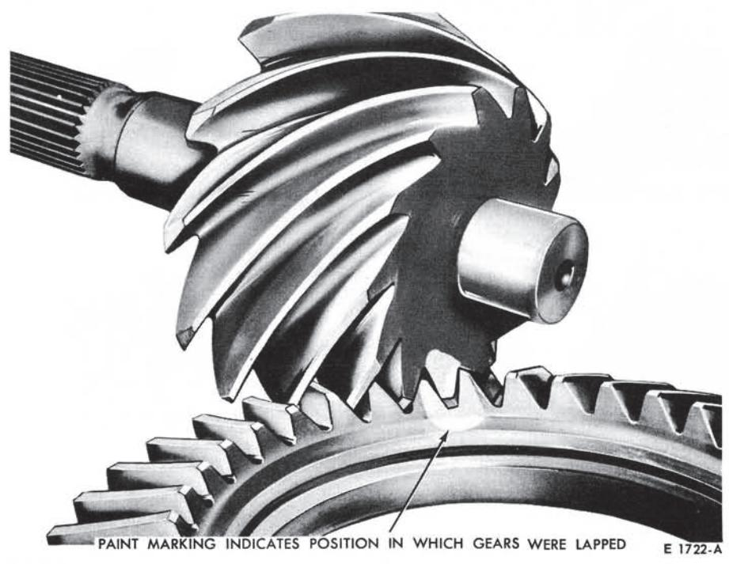
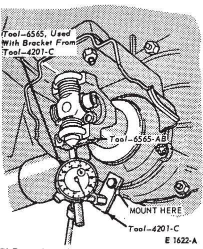
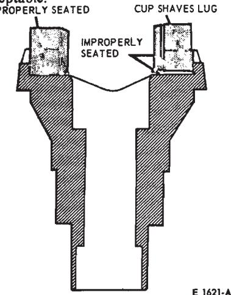
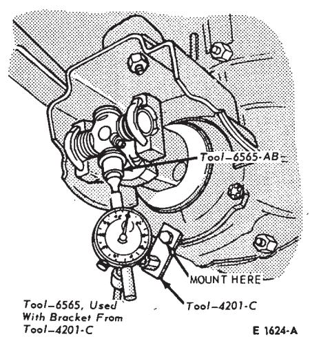
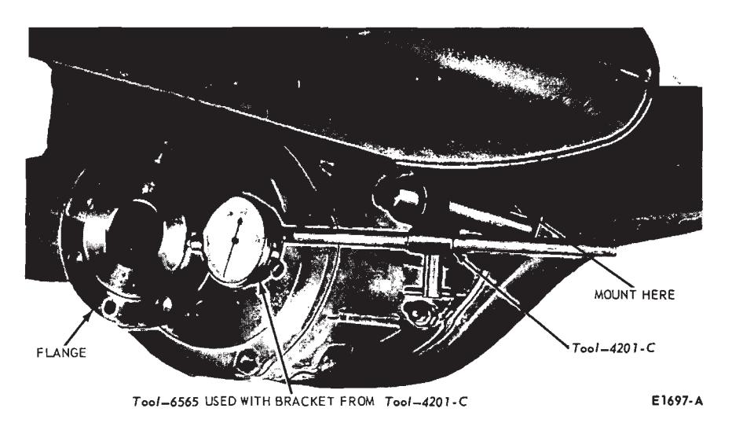
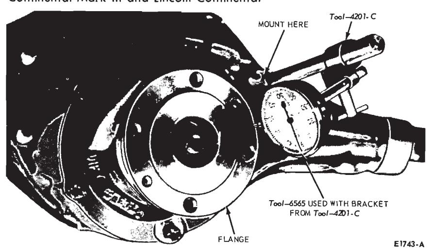

General Driving Axle and Drive Shaft Service · 15-01-08
- Thinner shim with the backlash set to specifications moves the pinion farther from the ring gear.
- Thicker shim with the backlash set to specifications moves the pinion closer to the ring gear.
- If the patterns are not correct, make the changes as indicated. The differential case and drive pinion will have to be removed from the carrier casting to change a shim. When reinstalling the pinion and ring gear of a non-hunting or partial non-hunting gear set, be sure that the marked tooth on the pinion indexes between the marked teeth on the ring gear (Fig. 3).

Fig. 3 — Gear Set Timing MarksRear Axle Companion Flange Runout Check
All Axles Except Thunderbird and Continental Mark III
- Raise the vehicle on a hoist that supports the rear axle (twin-post hoist).
- Remove the driveshaft assembly (Part 15-5).
- Check the companion flange damage to the universal joint bearing locating lugs. If the universal joint bearing locating lugs on the companion flange are shaved (worn) or damaged, replace the companion flange (Fig. 5).
- The rear axle companion flange runout is checked with a modified universal joint (checking tool) a dial indicator with 1.000 inch minimum travel, and a cup-shaped dial indicator adapter tool (Fig. 6). To fabricate the checking tool, modify a universal joint assembly by removing two bearing cups that are opposite each other, and cutting or grinding off one of the universal joint bearing flanges (Fig. 6).
- Install the cup-shaped adapter on the dial indicator stem. Install the dial indicator on the pinion retainer or pinion nose bumper bracket. Position the indicator to allow an indica-

Fig. 6 — Flange Bearing Cup Run-out Check—Typical
Fig. 5 — Checking Companion Flange| Indicator Reading | Flange Bearing Cup Runout — Inch | Driveshaft Universal Cross-Shaft Runout—Inch |
|---|---|---|
| 1 | 0.0045 | 0.005 |
| 2 | 0.002 | 0.004 |
| 3 | 0.003 | 0.003 |
| Average | 0.003 | 0.004 |
Fig. 7 — Flange Bearing Cup and Cross Shaft Runout Averaging Chart—Typical Readings tion at the ends of the universal joint bearing cups and the remaining exposed journal of the cross-shaft.
-
Turn the companion flange so that the dial indicator cup-type adapter rests on the machined surface of the bearing cup (Fig. 6). Rotate the companion flange side-to-side slightly to obtain a reading indicating that the bearing cup surface is perpendicular to the indicator cup-type adapter. This will be the point at which the dial indicator cup is closest to the center of companion flange rotation. It is also the point at which the dial indicator hand will reverse direction as the companion flange is turning. Set the dial indicator to zero.
-
Carefully retract the dial indicator stem and rotate the companion flange 180 degrees to position the machined surface of the opposite universal bearing under the dial indicator adapter tool. Again, slightly rotate the flange side-to-side to position the bearing perpendicular to the dial indicator adapter. Again, this is the point at which the indicator hand will re-verse direction as the flange is rotated. Record the flange bearing cup runout reading obtained from the indicator (Fig. 7).

Fig. 8 — Cross Shaft Runout Check—TypicalRotate the companion flange 90 degrees and position the dial indicator adapter on the machined end of the exposed journal (Fig. 8). Be sure the end surface of the exposed journal is perpendicular to the indicator cuptype adapter. This requires that the cross-shaft be moved fore and, aft on the flange bearing cups. Note the point at which the indicator hand reverses direction. Rotate the flange assembly side-to-side until the crossshaft is perpendicular to the pinion shaft axis, and the indicator hand reverses direction. Zero the dial indicator and check the zero point again by slightly moving the cross-shaft fore and aft, then rotate the companion flange from side-to-side.
-
With the indicator at zero, carefully retract the dial stem and rotate the flange 180 degrees. Rotate the cross-shaft 180 degrees on the flange bearing cups to position the exposed journal under the dial indicator adapter. Rock the cross-shaft fore and aft and the companion flange side-to-side to establish the point at which the indicator hand reverses direction. This will determine the driveshaft universal cross-shaft run-out. Record this reading (Fig. 8).
-
Repeat steps 5 through 8 at least three times and average the indicator readings obtained (Fig. 7).
-
To determine the total (combined) companion flange runout, it will be necessary to use the combined runout chart (Fig. 9). Position a straight edge at the amount of flange bearing cup runout indicated on the left hand column of the chart. Position another straight edge vertically at the amount of driveshaft universal cross-shaft runout indicated on the top of the chart. The point at which the straight edges cross the chart indicates the combined rear axle flange runout. For example:
With an indicated 0.003 inch flange bearing cup runout and an indicated 0.004 inch universal cross-shaft runout (Fig. 9), the combined companion flange runout will be 0.005 inch as indicated in the square on the chart (Fig. 9).
-
If the reading obtained in Step 10 exceeds specifications, reposition the companion flange 180 degrees on the pinion shaft and repeat steps 1 through 10.
-
If the repeat readings still exceed specifications, re-position the flange an additional 90 degrees on the pinion shaft and check the runout (Steps 4 through 10).
-
If the runout is still excessive, replace the companion flange and check the runout. If necessary, rotate the new flange on the pinion shaft until an acceptable runout is obtained.
If excessive runout is still evident after replacement of the companion flange, it will be necessary to replace the ring and pinion gear, and repeat the above checks until runout is within specifications.
-
Install the driveshaft assembly (Part 15-5). Make sure the universal joint bearing cups are properly positioned between the companion flange lugs.
-
Lower the vehicle. Road test
Flange Bearing Drive Shaft Universal Cross-Shaft Runout-Inch Cup Runout 0.000 0.001 0.002 0.003 0.004 0.005 0.006 0.007 0.008 0.000
0.001
0.002
0.003
0.004
0.005
0.006
0.0070.000
0.001
0.002
0.003
0.004
0.005
0.006
0.007
0.0080.001
0.0013
0.0022
0.0032
0.0042
0.0051
0.0061
0.0071
0.00810.002
0.0022
0.0027
0.0036
0.0045
0.0053
0.0062
0.0073
0.00820.003
0.0032
0.0037
0.0042
0.005
0.0058
0.0068
0.0075
0.00870.004
0.0042
0.0045
0.005
0.0057
0.0063
0.00720.005
0.0051
0.0053
0.0058
0.0064
0.0071
0.0078
0.00870.006
0.0061
0.0062
0.0067
0.0072
0.0078
0.0085
0.0093
0.0100.007
0.0071
0.0072
0.0077
0.0081
0.0087
0.0092
0.0099
0.01040.008
0.0081
0.0082
0.0085
0.009
0.0094
0.010
0.0103
0.011The total (combined) companion flange runout is located in the square where the columns containing the flange bearng cup runout and universal cross shaft runout readings intersect.

Fig. 10 — Checking Companion Flange Radial Runout—Thunderbird, Continental Mark III and Lincoln Continental
Fig. 11 — Checking Companion Flange Lateral Runout—Thunderbird, Continental Mark III and Lincoln Continentalthe vehicle. If drive shaft vibrations are evident during the road test, remove the driveshaft from the companion flange and rotate it 180 degrees. Road test the vehicle again.
Thunderbird, Lincoln Continental and Continental Mark III
-
Raise the vehicle on a hoist that supports the rear axle (twin-post hoist)
-
Remove the driveshaft assembly (Part 15-6).
-
Check the companion flange for damage.
-
To check radial runout, set up dial indicator as shown in Fig. 10.
-
Rotate the companion flange with the dial indicator in place. If the runout exceeds specifications, remove the flange and reinstall it 180 degrees from original position. Follow the procedure in Part 15-2 for companion flange installation.
-
If the runout is still excessive, remove and reinstall the flange an additional 90 degrees and recheck runout.
-
To check lateral (face) runout, set up the dial indicator as shown in Fig. 11. Repeat steps 5 and 6.
-
If the runout is still excessive, replace the companion flange and check the runout. If necessary, rotate the new flange on the pinion shaft until an acceptable runout is obtained.
If excessive runout is still evident after replacement of the companion flange, it will be necessary to replace the ring and pinion gear, and repeat the above checks until runout is within specifications.
-
Install the driveshaft assembly (Part 15-6).